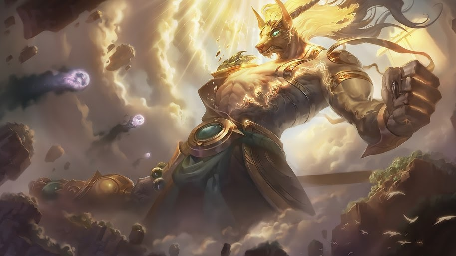
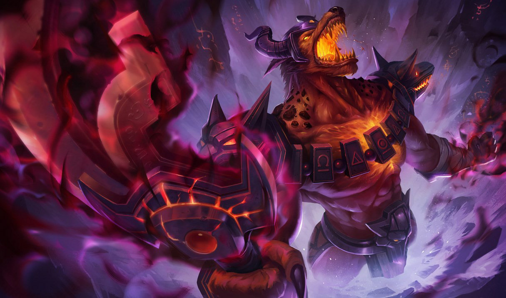

"The cycle of life and death continues, we will live, they will die."
Nasus is an imposing, jackal-headed Ascended being from ancient Shurima, a heroic figure regarded as a demigod by the people of the desert. Fiercely intelligent, he was a guardian of knowledge and peerless strategist whose wisdom guided the ancient empire of Shurima to greatness for many centuries. After the fall of the empire, he went into self-imposed exile, becoming little more than a legend. Now that the ancient city of Shurima has risen once more, he has returned, determined to ensure it never falls again.
Nasus is an imposing, jackal-headed Ascended being from ancient Shurima, a heroic figure regarded as a demigod by the people of the desert. Fiercely intelligent, he was a guardian of knowledge and peerless strategist whose wisdom guided the ancient empire of Shurima to greatness for many centuries. After the fall of the empire, he went into self-imposed exile, becoming little more than a legend. Now that the ancient city of Shurima has risen once more, he has returned, determined to ensure it never falls again. Nasus’s brilliance was recognized from a young age, long before he was chosen to join the ranks of the Ascended. A voracious scholar, he read, memorized and critiqued the greatest works of history, philosophy and rhetoric within the Library of the Sun before he’d seen ten summers. His passion for reading and critical thinking were not passed down to his younger brother Renekton, who was quickly bored, and spent his time fighting with other local children. The brothers were close, and Nasus kept a protective eye over his younger brother, helping to ensure he didn’t get into too much trouble. However, it wasn’t long before Nasus was welcomed into the exclusive Collegium of the Sun, leaving home to take up his place in this prestigious academy. While the pursuit of knowledge would always be his passion, Nasus’s grasp on military strategy and logistics ensured he became the youngest general in Shuriman history. While he was a competent soldier, his genius lay not in fighting battles, but in planning them.
His strategic foresight became legendary. In war, he was always a dozen moves ahead of the enemy, able to predict their movement and reactions, as well as pinpoint the exact moment to push the attack or pull back. A deeply empathetic man who took his responsibilities incredibly seriously, he always ensured his soldiers were well provisioned, paid on time, and treated fairly. Every loss of life pained him deeply, and he often refused to rest as he planned and replanned his troop movements and battle dispositions until they were perfect. He was loved and respected by all who served in his legions, and he guided the armies of Shurima to countless victories. His brother Renekton often served on the front lines of these wars, and the two of them quickly garnered an aura of invincibility. Despite the acclaim Nasus won, he did not enjoy war. Though he understood its importance - for now at least - in ensuring the continued progress of the empire, he firmly believed his greatest contribution to Shurima was in the knowledge he gathered for future generations. At Nasus’s urging, all the books, scrolls, teachings and histories of the cultures he defeated were preserved in great libraries and repositories throughout the empire, the greatest of which bore his name. His hunger for knowledge was not for selfish reasons, but to share wisdom with all of Shurima, to enhance understanding of the world and bring enlightenment to the empire.
After decades of dutiful service, Nasus was cruelly struck down by a terrible wasting sickness. Some say he encountered Amumu, a long-dead child-king said to bear a terrible curse; others believed he was laid low by the evil magicks of an Icathian cult-leader. Whatever the truth, the emperor’s own physician declared, with a heavy heart, that Nasus was incurable, and would be dead within a week. The people of Shurima went into mourning, for Nasus was its brightest star and beloved by all. The emperor himself begged the priesthood for an augury. After a day and night of communing with the divine, the priests declared it the will of the sun-god that Nasus be blessed with the Ascension ritual. Renekton, now a great war-leader, raced back to the capital to be with his brother. The terrible sickness had advanced dramatically, and Nasus was little more than a skeleton, his flesh wasted away and his bones as fragile as glass. So weak was he that as the golden light from the sun disc streamed onto the Ascension dais, Nasus was unable to climb the final stairs and step into the light.
Renekton’s love for his brother was stronger than any sense of self-preservation, and he nobly bore Nasus onto the dais. Ignoring his brother’s protests, he willingly accepted oblivion in order to save Nasus. However, Renekton was not destroyed, as was expected. When the light faded, two Ascended beings stood before Shurima. Both brothers had been deemed worthy, and the emperor himself dropped to his knees to give thanks to the divine. Nasus was now a towering, jackal-headed being of great strength, his eyes glittering with fierce intelligence, while Renekton had been transformed into a heavily muscled behemoth bearing the likeness of a crocodile. They took their place alongside the other rare Ascended beings of Shurima, and became its protectors. While Renekton had always been a great warrior, now he was virtually unstoppable. Nasus too had been gifted with powers far beyond the understanding of mortal men. The greatest boon of his Ascension - his newly extended longevity, which allowed him countless lifetimes to spend in study and contemplation - would, after the fall of Shurima, also prove to be his curse.
One side-effect of the ritual that disturbed Nasus was the increased savagery he saw within his brother. At the culmination of the siege of Nashramae, which finally brought that ancient city under Shuriman rule, Nasus witnessed the victorious Shuriman soldiers butchering everyone they came across and setting the city ablaze. Renekton led the massacre, and it was he who set fire to the great library of Nashramae, destroying countless irreplaceable volumes before Nasus was able to contain it. This was the closest the brothers ever came to bloodshed, standing in the center of the city, weapons drawn against each other. Under the stern, disappointed gaze of his brother, Renekton’s bloodlust waned, and he finally turned away in shame. Over the following centuries, Nasus bent his every effort to learning all he could, scouring the desert for years in search of ancient artifacts and wisdom, eventually going on to discover the legendary Tomb of the Emperors hidden beneath the Shuriman capital.